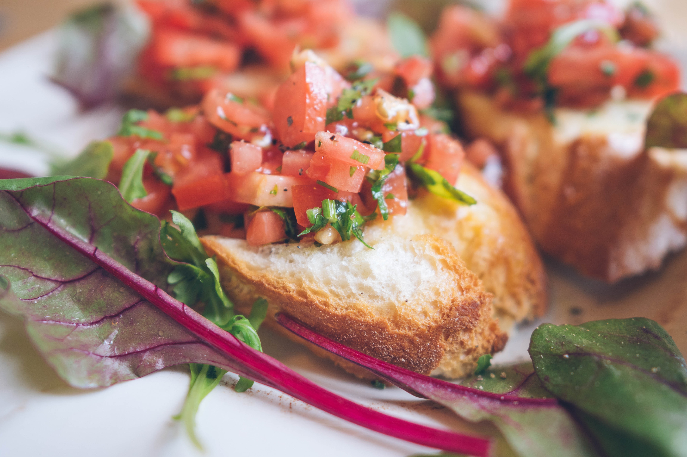

Step 1 Whisk grated garlic, salt, and 1 Tbsp. oil in a medium bowl. Add shrimp, toss to coat, and chill, uncovered, at least 30 minutes and up to 1 hour. Step 2 Heat remaining 2 Tbsp. oil in a large skillet over medium and cook shrimp mixture, being careful not to let shrimp or garlic brown, until shrimp is pink but still slightly underdone, about 1 minute per side. Transfer to a plate with a slotted spoon, leaving as much oil in pan as possible. Add sliced garlic and red pepper to skillet and cook, tossing, until fragrant, about 1 minute. Add wine and lemon juice and cook, stirring occasionally, until reduced by half, about 2 minutes. Add butter and cook, stirring and swirling pan occasionally, until butter is melted and sauce is thickened, about 5 minutes more. Step 3 Scrape shrimp along with any accumulated juices into skillet. Toss to coat and cook until shrimp are fully cooked through, about 2 minutes. Transfer to a platter,

Bring a large pot of water to a rolling boil over high heat. Cook pasta in boiling water until cooked through but still firm to the bite, about 10 minutes. Drain and set aside. Heat both oils in a large skillet over medium-high heat. Add garlic and cook until soft, 1 to 2 minutes. Add tomatoes, reduce heat to medium, and simmer for 10 minutes. Stir in pepper Jack, mozzarella, and Parmesan cheese. When cheese begins to melt, mix in cooked penne pasta. Season with fresh basil.

Blend up a batch of my 6-ingredient basil pesto, or use store-bought pesto in a pinch. Cook your pasta in a large pot of salted boiling water according to the package directions. Before draining the pasta, reserve some of the starchy pasta water. Then, add 1/4 cup of this pasta water back into the pot with your pesto, and stir to thin the pesto. Toss in the cooked pasta, and mix until the pesto thoroughly coats it. Add a big handful of arugula and toss until it’s barely wilted. Finish everything with a big squeeze of lemon, salt, pepper, red pepper flakes, and toasted pine nuts. Dig in!

Heat the oil over medium-high heat in a 6-quart Dutch oven. Add the sausages and stir, breaking up the sausages into small pieces with a wooden spoon, until cooked through, about 4 minutes. Add the chicken, 1/4 teaspoon salt and pepper. Cook until the chicken is no longer pink on the outside, 1 to 2 minutes. Transfer the chicken and sausage to a medium bowl, using a slotted spoon. Add the garlic, fennel, onion, bell pepper and 1/2 teaspoon salt and pepper to the pan. Cook until almost tender, about 5 minutes. Add the clam juice, tomatoes with juices, paprika, saffron, cayenne and bay leaves. Add the spaghetti and cook, uncovered, until almost tender, stirring occasionally, about 9 minutes. Return the chicken and sausage to the pan. Bring the sauce to a simmer. Add 1/4 teaspoon salt and pepper. Add the halibut, clams and shrimp. Cover and cook until the clams open, 4 to 5 minutes. Discard any unopened clams. Remove the cover, reduce heat to medium-low, and simmer gently until fish, shrimp and chicken are just tender, 4 to 5 minutes. Remove the bay leaves and discard. Season with salt and pepper. Mix in the parsley and serve.
Preheat oven to 400 degrees F (200 degrees C). Brush bread slices on both sides lightly with 1 tablespoon oil and place on large baking sheet. Toast bread until golden, 5 to 10 minutes, turning halfway through. Meanwhile, toss together tomatoes, basil, Parmesan cheese, and garlic in a bowl. Mix in balsamic vinegar, 2 teaspoons olive oil, kosher salt, and pepper. Spoon tomato mixture onto toasted bread slices and serve immediately.

Prepare the dough using the Best Pizza Dough recipe (follow this video instruction for more). Follow the preparation instructions in the dough recipe if prepared in advance. Place a pizza stone in the oven and preheat to 500°F. OR preheat your pizza oven (here’s the pizza oven we have!). Make the Homemade Pizza Sauce. Slice the mozzarella into ¼ inch thick pieces. If it’s incredibly watery fresh mozzarella (all brands vary), you may want to let it sit on a paper towel to remove moisture for about 15 minutes then dab the mozzarella with the paper towel to remove any additional moisture. When the oven is ready, stretch the dough into a circle; see How to Stretch Pizza Dough for instructions. Sprinkle a pizza peel with semolina flour or cornmeal, then carefully place the dough on top. Spread the pizza sauce across the dough. Top with mozzarella cheese. Taste a bite of the mozzarella cheese; if it does not taste salty, add a few pinches of kosher salt to the pizza. If you’re baking in a pizza oven, add the basil leaves. For baking in a standard oven, add the basil leaves after you bake (the leaves turn black in a standard oven). Transfer the pizza to the pizza stone on the pizza peel, then bake until the cheese is melted, about 7 minutes in the oven (or 1 minute in the pizza oven). Slice into pieces and serve immediately.